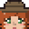

Ian
Ian é o diretor da Marina Luthor, a divisão náutica da Luthor Corp. Funcionário da Letícia e amigo de infância das férias no interior.
Rotina
Dias úteis
| Hora | Lugar |
|---|---|
| 6h | Em casa |
| 8h | Marina Luthor |
| 13h | Ricci Trattoria |
| 14h30 | Marina Luthor |
| 19h | Noonan's |
| 22h | Em casa |
Fim de semana
| Hora | Lugar |
|---|---|
| 6h | Em casa |
| 7h | Marina Luthor |
| 20h | Em casa |
Presentes
No aniversário (3 de Verão), o presente vale mais: amado ×5, gostou ×3 e neutro ×2.
| Reação | Itens |
|---|---|
| Ama +80 pontos | |
| Gosta +45 pontos | |
| Neutro +20 pontos | Todo o resto (coletáveis e itens comuns) |
| Não gosta −20 pontos |
Eventos de coração
| Corações | Evento | Onde e quando | O que ganha |
|---|---|---|---|
| ♥ 0 | Ian: a marina | Marina Luthor, das 7h às 13h (surpresa: sem aviso) | Regra do diretor da marina: a CEO paga metade do preço nos passeios. |
| ♥ 2 | Ian: os troféus | Apartamento do Ian, das 15h30 às 21h30 | — |
| ♥ 4 | Ian: segredo | Marina Luthor, das 13h45 às 19h45 | Contatos do Ian: peixes de alto-mar valem 15% a mais. |
| ♥ 6 | Ian: as férias no interior | Marina Luthor, das 15h40 às 21h40 | Presente: |
| ♥ 8 | Ian: a revanche | Marina Luthor, das 16h às 22h | — |
Falas
“Letícia! Quanto tempo. Bem-vinda à Marina Luthor. Ainda é estranho ver seu nome na placa e não o do seu pai?”
Logo que se conhecem
“Pesca em alto-mar é outra coisa. Marlim, dourado, garoupa... peixe que não chega perto do píer.”
Com amizade
“A gente se conhece desde as férias no interior, quando a gente era criança. Veleiro de brinquedo no lago, lembra?”
Bem próximas
Retratos
| Luthor Corp | |
|---|---|
| CatCo | |
| Moradores |  Bea |
| Conti Moretti | |
| De fora da cidade |